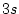
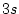

Three test cases are provided in the WIEN2k package. They contain the two starting files case.struct and case.inst and all the output so that you can compare your results with them.
The test cases are the following (where the names correspond to what was called CASE in the rest of this User's Guide)
TiC
Fccni
TiO2
We recommend to run these test cases (in a different directory) and compare the output to the provided one. All test cases are setup such that the CPU-time remains small (seconds). For real production runs the value of RKMAX in case.in1 must be increased and a better (denser) k-mesh should be used.
In addition we provide a subdirectory example_struct_files were various more complicated struct files can be found.
The TiC example is described in detail in chapter 3 (Quickstart).
Ferromagnetic Nickel is a test case for a spin-polarized calculation.
Ni has the atomic configuration
, , , , , , or [Ar] ,
. We treat the  ,
,  ,
,  and  as core states, and
and  as core states, and
 (as local orbital), ,
(as local orbital), ,  and
and  are handled as
valence states. In a spin-polarized calculation the file structure and
the sequence of programs is different from the non-spin-polarized case
(see 4.5.2).
are handled as
valence states. In a spin-polarized calculation the file structure and
the sequence of programs is different from the non-spin-polarized case
(see 4.5.2).
Create a new session and its corresponding directory. Generate the structure with the following data (we can use a large sphere as you will see from the output of nn):
| Title | fcc Ni |
| Lattice | F |
| a | 6.7 bohr |
| b | 6.7 bohr |
| c | 6.7 bohr |
| 90 | |
| Atom | Ni, enter position (0,0,0) and RMT = 2.3 |
Initialize the calculation using the default RKmax and use 3000 k-points (a ferromagnetic metal needs many k-points to yield reasonably converged magnetic moments). Allow for spin-polarization.
Start the scf cycle (runsp_lapw) with "-cc 0.0001" (in particular for magnetic systems charge convergence is often the best choice). At the bottom of the converged scf-file (Fccni.scf) you find the magnetic moments in the interstital region, inside the sphere and the total moment per cell (only the latter is an ``observable'', the others depend on the sphere size).
:MMINT: MAGNETIC MOMENT IN INTERSTITIAL = -0.03130 :MMI001: MAGNETIC MOMENT IN SPHERE 1 = 0.66198 :MMTOT: TOTAL MAGNETIC MOMENT IN CELL = 0.63068
This example shows you how to ``optimize internal parameters'' and do a k-point parallel calculation.
Create a new session and its corresponding directory. Generate the structure with the following data (we use a smaller O sphere because Ti-d states are harder to converge then O-p):
| Title | TiO2 |
| Spacegroup | |
| a | 8.682 bohr |
| b | 8.682 bohr |
| c | 5.592 bohr |
| 90 | |
| Atom | Ti, enter position (0,0,0) and RMT = 2.0 |
| Atom | O, enter position (0.3,0.3,0) and RMT = 1.6 |
StructGen
 should automatically add the equivalent positions.
should automatically add the equivalent positions.
Initialize the calculation using RKmax=6.5 in tio2.in1_st and use 100 k-points and a ``shift`` in kgen.
If you have more cpus available (a parallel machine or simply a couple of PCs
with a common NFS filesystem, for
details see 5.5), you can use
``Execution  Run scf'', activate the ``parallel''
button'' and ``start scf'' in w2web. This will create and open a
.machines file and you should insert lines with the proper names of
your PCs
(possibly use 9 (or 3) processors since we have 9 k-points, ).
Save this file and click on ``Execution
Run scf'', activate the ``parallel''
button'' and ``start scf'' in w2web. This will create and open a
.machines file and you should insert lines with the proper names of
your PCs
(possibly use 9 (or 3) processors since we have 9 k-points, ).
Save this file and click on ``Execution  Run scf'', activate
``-fc 1.0'' for force-convergence and ``start
scf'' to submit the scf-cycle.
Run scf'', activate
``-fc 1.0'' for force-convergence and ``start
scf'' to submit the scf-cycle.
Alternatively at the command-line you can use the UNIX command
cp $WIENROOT/SRC_templates/.machines .
and edit this file. You would start the scf-cycle (in background) simply by
typing
run_lapw -p -fc 1.0 &
During the scf-cycle monitor tio2.dayfile and check convergence (:ENE, :DIS, :FGL002), either using ``Utils/Analysis'' in w2web, or ``grep :ENE tio2.scf''. You should see some convergence of :FGL002 and then a big jump in the final cycle, when the valence-force corrections are added. Only the last force (including this correction) is valid.
Since this force is quite large, you can now optimize the position of the O-atom:
Start the structure minimization in w2web using ``Execution
 mini.positions''. This will generate TiO2.inM, and you can
try option PORT with tolf=1.0 (instead of 2.0), otherwise stay with the default
parameters. Repeat ``Execution
mini.positions''. This will generate TiO2.inM, and you can
try option PORT with tolf=1.0 (instead of 2.0), otherwise stay with the default
parameters. Repeat ``Execution  mini.positions'' and start the
minimization.
mini.positions'' and start the
minimization.
Alternatively you can use
min_lapw -pwhich is identical to:
min_lapw -j ``run_lapw -I -fc 1 -p''
This will create TiO2.inM automatically, call the program min, which generates a new struct file using the calculated forces, and continues with the next scf cycle. It will continue until the forces are below 1 mRy/bohr (TiO2.inM) and the final results are not ``saved'' automatically but can be found in the ``current'' calculation.
You should watch the minimization (:ENE, :FGL002, :POS002) using the file TiO2.scf_mini, which contains the final iteration of each geometry step (see also Sec.5.3.2). If the forces in this file oscillate from plus to minus and seem to diverge, or if they change very little, you can edit TiO2.inM (change the method, reduce or increase the stepsize), and remove TiO2.tmpM (contains the ``history'' of the minimization and is used to calculate the velocities of the moving atoms). (This should not be neceaasry for the rutile example, but may occur in more complex minimizations. See comments in Sec. 5.3.2).
The final structural parameter of the O-atom should be close to x=0.304, which compares well with the experimental x=0.305.
This example shows you how to create a supercell of TiC, which could be used to simulate a TiC-surface or vacancies, impurities or core-holes for X-ray absorption / ELNES spectroscopy. I'll describe the procedure using Unix and WIEN2k commands in an xterm, but of course you can do the same in w2web.
Create a new directory, copy the original TiC struct file into it and run supercell program:
mkdir super cd super cp ../TiC/TiC.struct . x supercell
Specify ``TiC.struct'', a ``2x2x2'' supercell, ``F'' lattice (this will create a cell with 16 atoms, you can also create 32 or 64 atom cells using B or P lattice type. Note: surfaces require a P supercell).
cp TiC_super.struct super.structand edit this file to make some changes. You could eg.
Note: it is important to make at least one of these chages. Otherwise the initialization will restore the original unit cell (or the calculations will fail later on because symmetry is most likely not correct)
Run init_lapw. You will see that nn complains and finds a new set of equivalent atoms (originally all atoms were non-equivalent, but nn finds that some atoms have identical neighbors, thus should be in an equivalent set). Accept the automatically generated struct file and continue. Remember, supercells normally require less k-points than the original small cell.
After the complete initialization you may in principle restore the original struct file (eg. without a displacement) in case you want to ``repeat'' the undistorted structure in supercell geometry.
For a ``core-hole'' calculation you would now edit super.inc and remove one core electron from the desired atom and state (1s or 2p, ...). In addition you should add the missing electron either in super.inm (background charge) or super.in2 (add it to the valence electrons). In the latter case, you should remove this extra electron AFTER scf and BEFORE calculation of the spectra.
Once this has been done, you could start a scf-cycle (for impurities, vacancies,.. you should most likely also optimize the internal positions).